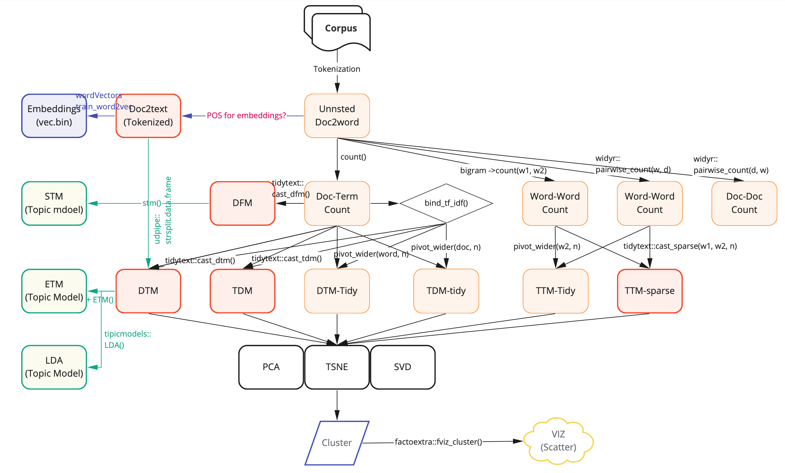

Chapter 5 Representation

5.1 Corpus-data.frame
library(stringr)
text <- c("我家狗兒最愛睡覺",
"我家貓兒最愛睡覺",
"所有貓兒天生就會跑",
"所有狗兒天生就會跑",
"所有鳥兒天生就會飛",
"我家狗兒老是汪汪叫",
"我家貓兒老是喵喵叫",
"我家鳥兒老是啾啾叫")
corpus.df <- data.frame(text) %>%
mutate(doc_id = paste0("doc", 1:n()))library(jiebaR)
# Sys.setlocale(category = "LC_ALL", locale = "zh_TW.UTF-8")
cutter <- worker()
segment_not <- c("喵喵", "啾啾", "汪汪", "老是", "就會")
new_user_word(cutter, segment_not)## [1] TRUE5.2 Doc-Term-Pair (unnested)
unnested.df <- corpus.df %>%
mutate(word = purrr::map(text, function(x)segment(x, cutter))) %>%
unnest(word)
unnested.df## # A tibble: 38 × 3
## text doc_id word
## <chr> <chr> <chr>
## 1 我家狗兒最愛睡覺 doc1 我家
## 2 我家狗兒最愛睡覺 doc1 狗兒
## 3 我家狗兒最愛睡覺 doc1 最愛
## 4 我家狗兒最愛睡覺 doc1 睡覺
## 5 我家貓兒最愛睡覺 doc2 我家
## 6 我家貓兒最愛睡覺 doc2 貓兒
## 7 我家貓兒最愛睡覺 doc2 最愛
## 8 我家貓兒最愛睡覺 doc2 睡覺
## 9 所有貓兒天生就會跑 doc3 所有
## 10 所有貓兒天生就會跑 doc3 貓兒
## # … with 28 more rows5.3 Doc-Term-Count (Term-Doc)
dtcount <- unnested.df %>%
count(doc_id, word, sort = T)
dtcount## # A tibble: 38 × 3
## doc_id word n
## <chr> <chr> <int>
## 1 doc1 狗兒 1
## 2 doc1 睡覺 1
## 3 doc1 我家 1
## 4 doc1 最愛 1
## 5 doc2 貓兒 1
## 6 doc2 睡覺 1
## 7 doc2 我家 1
## 8 doc2 最愛 1
## 9 doc3 就會 1
## 10 doc3 貓兒 1
## # … with 28 more rows5.4 Doc-Doc-Count
ddcount <- unnested.df %>%
widyr::pairwise_count(doc_id, word)
ddcount## # A tibble: 36 × 3
## item1 item2 n
## <chr> <chr> <dbl>
## 1 doc2 doc1 3
## 2 doc4 doc1 1
## 3 doc6 doc1 2
## 4 doc7 doc1 1
## 5 doc8 doc1 1
## 6 doc1 doc2 3
## 7 doc3 doc2 1
## 8 doc6 doc2 1
## 9 doc7 doc2 2
## 10 doc8 doc2 1
## # … with 26 more rows5.5 Term-Term-Count
5.5.1 Term-Term-Count-by-Collocation
library(widyr)
ttcount_collocate <- unnested.df %>%
widyr::pairwise_count(word, doc_id)
ttcount_collocate## # A tibble: 104 × 3
## item1 item2 n
## <chr> <chr> <dbl>
## 1 狗兒 我家 2
## 2 最愛 我家 2
## 3 睡覺 我家 2
## 4 貓兒 我家 2
## 5 鳥兒 我家 1
## 6 老是 我家 3
## 7 汪汪 我家 1
## 8 叫 我家 3
## 9 喵喵 我家 1
## 10 啾啾 我家 1
## # … with 94 more rows5.5.2 Term-Term-Count-by-bigram
ttcount_bigram <- unnested.df %>%
group_by(doc_id) %>%
mutate(w2 = lead(word, 1)) %>%
drop_na(w2) %>%
ungroup() %>%
rename(w1 = word) %>%
bind_rows(data.frame(w1 = .$w2, w2 = .$w1)) %>%
count(w1, w2)
ttcount_bigram## # A tibble: 48 × 3
## w1 w2 n
## <chr> <chr> <int>
## 1 飛 就會 1
## 2 狗兒 老是 1
## 3 狗兒 所有 1
## 4 狗兒 天生 1
## 5 狗兒 我家 2
## 6 狗兒 最愛 1
## 7 叫 啾啾 1
## 8 叫 喵喵 1
## 9 叫 汪汪 1
## 10 啾啾 叫 1
## # … with 38 more rows5.6 Pivot-wide-to-matrix
5.6.1 Doc-Term-Matrix-tidy
dtm_tidy <- unnested.df %>%
count(doc_id, word, sort = T) %>%
pivot_wider(names_from = word, values_from = n, values_fill=0) %>%
as.data.frame() %>%
`rownames<-`(.$doc_id) %>%
select(-doc_id)
dtm_tidy## 狗兒 睡覺 我家 最愛 貓兒 就會 跑 所有 天生 飛 鳥兒 叫 老是 汪汪 喵喵 啾啾
## doc1 1 1 1 1 0 0 0 0 0 0 0 0 0 0 0 0
## doc2 0 1 1 1 1 0 0 0 0 0 0 0 0 0 0 0
## doc3 0 0 0 0 1 1 1 1 1 0 0 0 0 0 0 0
## doc4 1 0 0 0 0 1 1 1 1 0 0 0 0 0 0 0
## doc5 0 0 0 0 0 1 0 1 1 1 1 0 0 0 0 0
## doc6 1 0 1 0 0 0 0 0 0 0 0 1 1 1 0 0
## doc7 0 0 1 0 1 0 0 0 0 0 0 1 1 0 1 0
## doc8 0 0 1 0 0 0 0 0 0 0 1 1 1 0 0 15.6.2 Term-Document-Matrix-tidy
tdm_tidy <- unnested.df %>%
count(doc_id, word, sort = T) %>%
pivot_wider(names_from = doc_id, values_from = n, values_fill=0) %>%
as.data.frame() %>%
`rownames<-`(.$word) %>%
select(-word)
tdm_tidy## doc1 doc2 doc3 doc4 doc5 doc6 doc7 doc8
## 狗兒 1 0 0 1 0 1 0 0
## 睡覺 1 1 0 0 0 0 0 0
## 我家 1 1 0 0 0 1 1 1
## 最愛 1 1 0 0 0 0 0 0
## 貓兒 0 1 1 0 0 0 1 0
## 就會 0 0 1 1 1 0 0 0
## 跑 0 0 1 1 0 0 0 0
## 所有 0 0 1 1 1 0 0 0
## 天生 0 0 1 1 1 0 0 0
## 飛 0 0 0 0 1 0 0 0
## 鳥兒 0 0 0 0 1 0 0 1
## 叫 0 0 0 0 0 1 1 1
## 老是 0 0 0 0 0 1 1 1
## 汪汪 0 0 0 0 0 1 0 0
## 喵喵 0 0 0 0 0 0 1 0
## 啾啾 0 0 0 0 0 0 0 15.7 tidytext-to-matrix
5.7.1 sparse(ttm)
library(tidytext)
sparse_ttm <- ttcount_bigram %>% tidytext::cast_sparse(w1, w2, n)
sparse_ttm## 16 x 16 sparse Matrix of class "dgCMatrix"
##
## 飛 1 . . . . . . . . . . . . . . .
## 狗兒 . 1 1 1 2 1 . . . . . . . . . .
## 叫 . . . . . . 1 1 1 . . . . . . .
## 啾啾 . 1 . . . . . . . 1 . . . . . .
## 就會 . . . 3 . . . . . . 1 2 . . . .
## 老是 . . . . . . 1 1 1 . . . 1 1 1 .
## 貓兒 . 1 1 1 2 1 . . . . . . . . . .
## 喵喵 . 1 . . . . . . . 1 . . . . . .
## 鳥兒 . 1 1 1 1 . . . . . . . . . . .
## 跑 2 . . . . . . . . . . . . . . .
## 睡覺 . . . . . 2 . . . . . . . . . .
## 所有 . . . . . . . . . . . . 1 1 1 .
## 天生 3 . . . . . . . . . . . 1 1 1 .
## 汪汪 . 1 . . . . . . . 1 . . . . . .
## 我家 . . . . . . . . . . . . 2 2 1 .
## 最愛 . . . . . . . . . . . . 1 1 . 25.7.2 dfm
dfm <- dtcount %>% tidytext::cast_dfm(doc_id, word, n)
dfm## Document-feature matrix of: 8 documents, 16 features (70.31% sparse) and 0 docvars.
## features
## docs 狗兒 睡覺 我家 最愛 貓兒 就會 跑 所有 天生 飛
## doc1 1 1 1 1 0 0 0 0 0 0
## doc2 0 1 1 1 1 0 0 0 0 0
## doc3 0 0 0 0 1 1 1 1 1 0
## doc4 1 0 0 0 0 1 1 1 1 0
## doc5 0 0 0 0 0 1 0 1 1 1
## doc6 1 0 1 0 0 0 0 0 0 0
## [ reached max_ndoc ... 2 more documents, reached max_nfeat ... 6 more features ]5.8 Dimension Reduction
5.8.1 t-SNE on tt affmatrix
library(tsne)
tsne.affmatrix <- tsne(affmatrix, initial_config = NULL, k = 2, initial_dims = 30,
perplexity = 30, max_iter = 100, min_cost = 0,
epoch_callback = NULL, whiten = TRUE, epoch=20)
tsne.affmatrix## [,1] [,2]
## [1,] 4044.60338 -1120.773071
## [2,] -417.11626 -2.205613
## [3,] 68.37004 -162.536259
## [4,] -876.07763 -303.809531
## [5,] 816.12469 80.945270
## [6,] 179.72277 -1106.291095
## [7,] 71.41320 113.856501
## [8,] 459.65619 324.122512
## [9,] -185.79564 132.369942
## [10,] -302.27383 323.814001
## [11,] 700.29004 430.481347
## [12,] -155.88574 -96.485588
## [13,] -1307.67910 388.136321
## [14,] -1807.92033 916.104862
## [15,] -564.02625 709.178072
## [16,] -723.40554 -626.907671th <- theme_minimal() +
theme(title = element_text(family = "Heiti TC Light"),
text = element_text(family = "Heiti TC Light"))
as.data.frame(tsne.affmatrix) %>%
bind_cols(data.frame(name = rownames(affmatrix))) %>%
ggplot(aes(V1, V2, label = name)) +
geom_jitter(alpha = 0.1, color = "blue") +
geom_text(aes(label = name, family = "Heiti TC Light"), hjust=0, vjust=0, size = 4, alpha = 0.5) + theme_minimal()
5.8.2 t-SNE on tdm-tidy
tsne.tdmtidy <- tsne(tdm_tidy, initial_config = NULL, k = 2, initial_dims = 30,
perplexity = 30, max_iter = 100, min_cost = 0,
epoch_callback = NULL, whiten = TRUE, epoch=20)
tsne.tdmtidy## [,1] [,2]
## [1,] -825.62567 -1977.96920
## [2,] -346.67123 -58.96477
## [3,] 379.01044 1031.72957
## [4,] 68.29747 29.63452
## [5,] -157.22440 -24.72322
## [6,] -74.76254 120.51638
## [7,] -82.71670 38.15536
## [8,] -63.88097 290.88904
## [9,] -1729.13674 -278.05684
## [10,] 11.19381 105.77365
## [11,] 183.48526 -57.28247
## [12,] 458.67312 -150.99357
## [13,] 2801.05086 209.39330
## [14,] -32.68982 204.01391
## [15,] -441.31498 347.92807
## [16,] -147.68791 169.95625as.data.frame(tsne.tdmtidy) %>%
bind_cols(data.frame(name = rownames(tdm_tidy))) %>%
ggplot(aes(V1, V2, label = name)) +
geom_jitter(alpha = 0.1, color = "blue") +
geom_text(aes(label = name, family = "Heiti TC Light"), hjust=0, vjust=0, size = 4, alpha = 0.5) + theme_minimal()
5.8.3 SVD on affmatrix
m.svd <- svd(affmatrix)
# D <- diag(m.svd$d)
# m.svd$u %*% D %*% t(m.svd$v) # X = U D V'
ds <- diag(1/m.svd$d[1:3])
u <- m.svd$u
v <- m.svd$v
us <- as.matrix(u[, 1:3])
vs <- as.matrix(v[, 1:3])
(m.ginv <- vs %*% ds %*% t(us))## [,1] [,2] [,3] [,4] [,5]
## [1,] 0.0676430449 0.022609643 -0.020210631 0.0096326720 -0.064754623
## [2,] 0.0071266593 0.043274547 -0.003180411 0.0075898145 0.028138277
## [3,] 0.0046206466 0.036227350 -0.002062054 0.0062118429 0.025546618
## [4,] -0.0122257597 0.063880346 0.005455984 0.0088035014 0.075189764
## [5,] 0.0085420267 0.063341786 -0.003812046 0.0109099739 0.043981949
## [6,] 0.0060040433 0.033308572 -0.002679422 0.0058966366 0.020890809
## [7,] -0.0067368770 -0.003363332 0.004769961 -0.0014329227 0.009632672
## [8,] -0.0067368770 -0.003363332 0.004769961 -0.0014329227 0.009632672
## [9,] -0.0067368770 -0.003363332 0.004769961 -0.0014329227 0.009632672
## [10,] 0.0025060127 0.007047196 -0.001118357 0.0013779716 0.002591659
## [11,] -0.0056154688 0.009217665 0.002506013 0.0008638862 0.016547715
## [12,] -0.0112309375 0.018435331 0.005012025 0.0017277724 0.033095431
## [13,] -0.0086227159 -0.007894355 0.015008815 -0.0033633317 0.022609643
## [14,] -0.0086227159 -0.007894355 0.015008815 -0.0033633317 0.022609643
## [15,] 0.0007486387 -0.002815467 0.007380592 -0.0011995090 0.008063573
## [16,] -0.0082473702 -0.004192728 0.006026211 -0.0017862811 0.012008087
## [,6] [,7] [,8] [,9] [,10]
## [1,] -0.036707424 0.022609643 0.0096326720 0.008063573 0.135286090
## [2,] -0.009044530 0.043274547 0.0075898145 0.028973997 0.014253319
## [3,] -0.005864119 0.036227350 0.0062118429 0.024432861 0.009241293
## [4,] 0.015515859 0.063880346 0.0088035014 0.045766724 -0.024451519
## [5,] -0.010840789 0.063341786 0.0109099739 0.042658690 0.017084053
## [6,] -0.007619804 0.033308572 0.0058966366 0.022233069 0.012008087
## [7,] 0.017236035 -0.003363332 -0.0014329227 -0.001199509 -0.013473754
## [8,] 0.017236035 -0.003363332 -0.0014329227 -0.001199509 -0.013473754
## [9,] 0.017236035 -0.003363332 -0.0014329227 -0.001199509 -0.013473754
## [10,] -0.003180411 0.007047196 0.0013779716 0.004541136 0.005012025
## [11,] 0.007126659 0.009217665 0.0008638862 0.007111287 -0.011230938
## [12,] 0.014253319 0.018435331 0.0017277724 0.014222575 -0.022461875
## [13,] 0.065915990 -0.007894355 -0.0033633317 -0.002815467 -0.017245432
## [14,] 0.065915990 -0.007894355 -0.0033633317 -0.002815467 -0.017245432
## [15,] 0.037048911 -0.002815467 -0.0011995090 -0.001004117 0.001497277
## [16,] 0.022020491 -0.004192728 -0.0017862811 -0.001495308 -0.016494740
## [,11] [,12] [,13] [,14] [,15]
## [1,] 0.012008087 -0.016496793 0.186432342 0.0096326720 -0.033742225
## [2,] 0.009995515 -0.005864119 0.015515859 0.0075898145 -0.010840789
## [3,] 0.008197756 -0.003802065 0.010059875 0.0062118429 -0.007028743
## [4,] 0.011880974 0.010059875 -0.026617404 0.0088035014 0.018597337
## [5,] 0.014391892 -0.007028743 0.018597337 0.0109099739 -0.012993790
## [6,] 0.007759114 -0.004940382 0.013071748 0.0058966366 -0.009133111
## [7,] -0.001786281 0.012466074 -0.007744557 -0.0014329227 0.022471951
## [8,] -0.001786281 0.012466074 -0.007744557 -0.0014329227 0.022471951
## [9,] -0.001786281 0.012466074 -0.007744557 -0.0014329227 0.022471951
## [10,] 0.001797758 -0.002062054 0.005455984 0.0013779716 -0.003812046
## [11,] 0.001227739 0.004620647 -0.012225760 0.0008638862 0.008542027
## [12,] 0.002455478 0.009241293 -0.024451519 0.0017277724 0.017084053
## [13,] -0.004192728 0.050907175 0.025039027 -0.0033633317 0.090479861
## [14,] -0.004192728 0.050907175 0.025039027 -0.0033633317 0.090479861
## [15,] -0.001495308 0.029668319 0.031914235 -0.0011995090 0.052337297
## [16,] -0.002226778 0.015994280 -0.008747831 -0.0017862811 0.028805050
## [,16]
## [1,] -0.033740172
## [2,] -0.007619804
## [3,] -0.004940382
## [4,] 0.013071748
## [5,] -0.009133111
## [6,] -0.006419506
## [7,] 0.014023351
## [8,] 0.014023351
## [9,] 0.014023351
## [10,] -0.002679422
## [11,] 0.006004043
## [12,] 0.012008087
## [13,] 0.052383457
## [14,] 0.052383457
## [15,] 0.029035995
## [16,] 0.017889874plot(m.svd$v, type="n")
text(m.svd$v[,1], m.svd$v[,2], labels=rownames(affmatrix), cex= 1.5, family="Heiti TC Light")
plot(m.ginv, type="n")
text(m.ginv[,1], m.ginv[,2], labels=rownames(affmatrix), cex= 1.5, family="Heiti TC Light")
5.8.4 SVD on sparse_ttm
m.svd <- svd(sparse_ttm)
D <- diag(m.svd$d)
m.svd$u %*% D %*% t(m.svd$v) # X = U D V'## [,1] [,2]
## [1,] 0.999999999999999555910790 0.0000000000000002092989
## [2,] -0.000000000000000006640738 1.0000000000000000000000
## [3,] 0.000000000000000480465887 -0.0000000000000001559769
## [4,] -0.000000000000000082592489 1.0000000000000006661338
## [5,] 0.000000000000000529764898 0.0000000000000001179612
## [6,] 0.000000000000001069733367 -0.0000000000000005041938
## [7,] -0.000000000000000211554949 1.0000000000000004440892
## [8,] -0.000000000000000041433464 1.0000000000000002220446
## [9,] 0.000000000000000008727827 0.9999999999999993338662
## [10,] 1.999999999999999111821580 0.0000000000000005801119
## [11,] -0.000000000000000032038174 0.0000000000000003191891
## [12,] 0.000000000000000346299256 -0.0000000000000003973161
## [13,] 2.999999999999999111821580 0.0000000000000004094447
## [14,] -0.000000000000000041009947 1.0000000000000006661338
## [15,] 0.000000000000000634788514 -0.0000000000000007834445
## [16,] 0.000000000000000553963042 0.0000000000000000756231
## [,3] [,4]
## [1,] 0.00000000000000005006675 -0.00000000000000026950293
## [2,] 0.99999999999999922284388 1.00000000000000022204460
## [3,] -0.00000000000000072148103 -0.00000000000000016944767
## [4,] -0.00000000000000007230008 0.00000000000000084751778
## [5,] 0.00000000000000002775558 3.00000000000000177635684
## [6,] -0.00000000000000022589483 -0.00000000000000022737033
## [7,] 0.99999999999999988897770 1.00000000000000044408921
## [8,] -0.00000000000000011663425 -0.00000000000000007572407
## [9,] 1.00000000000000044408921 1.00000000000000044408921
## [10,] 0.00000000000000012356633 -0.00000000000000002187772
## [11,] -0.00000000000000018041124 -0.00000000000000026714742
## [12,] -0.00000000000000028761292 -0.00000000000000055333830
## [13,] 0.00000000000000014303587 -0.00000000000000020374695
## [14,] -0.00000000000000030372714 -0.00000000000000017504883
## [15,] -0.00000000000000032829642 0.00000000000000027636313
## [16,] 0.00000000000000012007539 -0.00000000000000003459960
## [,5] [,6]
## [1,] 0.00000000000000032200805 -0.00000000000000005891284
## [2,] 1.99999999999999866773237 1.00000000000000044408921
## [3,] -0.00000000000000025673907 -0.00000000000000031078655
## [4,] 0.00000000000000038857806 0.00000000000000083201675
## [5,] -0.00000000000000089858676 0.00000000000000015742616
## [6,] -0.00000000000000015373987 0.00000000000000015924219
## [7,] 1.99999999999999933386619 1.00000000000000111022302
## [8,] -0.00000000000000010061396 0.00000000000000045883436
## [9,] 1.00000000000000000000000 0.00000000000000139124823
## [10,] -0.00000000000000001669671 0.00000000000000043164799
## [11,] -0.00000000000000013877788 2.00000000000000044408921
## [12,] -0.00000000000000048745730 -0.00000000000000014219311
## [13,] 0.00000000000000033686161 0.00000000000000009049022
## [14,] -0.00000000000000022898350 0.00000000000000050328665
## [15,] -0.00000000000000057809660 -0.00000000000000030991919
## [16,] 0.00000000000000024313234 -0.00000000000000009893345
## [,7] [,8]
## [1,] 0.000000000000000063874677 0.000000000000000105251203
## [2,] -0.000000000000000458766335 -0.000000000000000171887894
## [3,] 1.000000000000000666133815 1.000000000000000666133815
## [4,] 0.000000000000000137101866 0.000000000000000354348143
## [5,] 0.000000000000000696233978 -0.000000000000000422103623
## [6,] 1.000000000000000444089210 1.000000000000000444089210
## [7,] -0.000000000000000244880874 -0.000000000000000183405158
## [8,] -0.000000000000000204046989 0.000000000000000178916221
## [9,] 0.000000000000000007914676 -0.000000000000000001301043
## [10,] 0.000000000000000143292727 0.000000000000000232328321
## [11,] -0.000000000000000065770414 0.000000000000000250369387
## [12,] -0.000000000000000250180984 -0.000000000000000193279067
## [13,] -0.000000000000000122217938 -0.000000000000000114554162
## [14,] 0.000000000000000036424831 0.000000000000000035623292
## [15,] -0.000000000000000432902022 -0.000000000000000430913612
## [16,] -0.000000000000000101851794 -0.000000000000000104700737
## [,9] [,10]
## [1,] 0.00000000000000011659400 -0.000000000000000024117152
## [2,] -0.00000000000000001863379 0.000000000000000236513962
## [3,] 1.00000000000000066613381 -0.000000000000000116808346
## [4,] 0.00000000000000012097853 0.999999999999999888977698
## [5,] -0.00000000000000051730674 -0.000000000000000324393290
## [6,] 1.00000000000000044408921 -0.000000000000000069782848
## [7,] -0.00000000000000004134969 0.000000000000000311658656
## [8,] -0.00000000000000004738542 0.999999999999999666933093
## [9,] -0.00000000000000005274644 -0.000000000000001165734176
## [10,] 0.00000000000000017252934 0.000000000000000183925351
## [11,] -0.00000000000000005622944 0.000000000000000499600361
## [12,] -0.00000000000000020524945 -0.000000000000000077564477
## [13,] -0.00000000000000010784220 -0.000000000000000009157259
## [14,] -0.00000000000000012919913 1.000000000000000000000000
## [15,] -0.00000000000000049166874 0.000000000000000053776428
## [16,] -0.00000000000000009885272 0.000000000000000047325425
## [,11] [,12]
## [1,] -0.000000000000000075668047 -0.00000000000000015101083
## [2,] -0.000000000000000092184878 -0.00000000000000016355308
## [3,] 0.000000000000000086706612 0.00000000000000017384690
## [4,] 0.000000000000000314442152 0.00000000000000058725094
## [5,] 1.000000000000000222044605 2.00000000000000000000000
## [6,] 0.000000000000000076032134 0.00000000000000015098007
## [7,] -0.000000000000000171493090 -0.00000000000000032216950
## [8,] -0.000000000000000084843291 -0.00000000000000021825884
## [9,] -0.000000000000000166533454 -0.00000000000000026367797
## [10,] -0.000000000000000044764346 -0.00000000000000008866133
## [11,] 0.000000000000000138777878 0.00000000000000011102230
## [12,] -0.000000000000000162349841 -0.00000000000000032621757
## [13,] -0.000000000000000161124334 -0.00000000000000032246551
## [14,] 0.000000000000000007190893 -0.00000000000000002725158
## [15,] 0.000000000000000193313247 0.00000000000000038510861
## [16,] -0.000000000000000081518451 -0.00000000000000015870009
## [,13] [,14]
## [1,] -0.000000000000000076598883 -0.000000000000000076598883
## [2,] -0.000000000000000122298005 -0.000000000000000122298005
## [3,] -0.000000000000000372763953 -0.000000000000000372763953
## [4,] -0.000000000000000193868901 -0.000000000000000193868901
## [5,] -0.000000000000000073319172 -0.000000000000000073319172
## [6,] 0.999999999999999666933093 0.999999999999999666933093
## [7,] -0.000000000000000005637851 -0.000000000000000005637851
## [8,] -0.000000000000000164812283 -0.000000000000000164812283
## [9,] -0.000000000000000081315163 -0.000000000000000081315163
## [10,] -0.000000000000000151185217 -0.000000000000000151185217
## [11,] 0.000000000000000013335687 0.000000000000000013335687
## [12,] 0.999999999999999888977698 0.999999999999999888977698
## [13,] 0.999999999999999444888488 0.999999999999999444888488
## [14,] -0.000000000000000166275956 -0.000000000000000166275956
## [15,] 1.999999999999999777955395 1.999999999999999777955395
## [16,] 0.999999999999999666933093 0.999999999999999666933093
## [,15] [,16]
## [1,] -0.00000000000000006555696 0.00000000000000015492910
## [2,] -0.00000000000000031268391 -0.00000000000000020762472
## [3,] 0.00000000000000004751516 0.00000000000000105667191
## [4,] -0.00000000000000026096746 -0.00000000000000028721871
## [5,] -0.00000000000000011053441 -0.00000000000000047723869
## [6,] 1.00000000000000066613381 0.00000000000000014451060
## [7,] -0.00000000000000027018318 -0.00000000000000002461139
## [8,] -0.00000000000000026893635 -0.00000000000000009070706
## [9,] -0.00000000000000034867942 -0.00000000000000047574791
## [10,] -0.00000000000000012317553 0.00000000000000021057578
## [11,] 0.00000000000000005399327 -0.00000000000000007795414
## [12,] 1.00000000000000022204460 -0.00000000000000021078584
## [13,] 0.99999999999999966693309 -0.00000000000000007719604
## [14,] -0.00000000000000026579216 -0.00000000000000009845911
## [15,] 0.99999999999999977795540 -0.00000000000000109902186
## [16,] -0.00000000000000041053569 2.00000000000000088817842plot(m.svd$v, type="n")
text(m.svd$v[,1], m.svd$v[,2], labels=rownames(affmatrix), cex= 1.5, family="Heiti TC Light")
5.8.5 SVD on tdm
m.svd <- svd(tdm)
D <- diag(m.svd$d)
m.svd$u %*% D %*% t(m.svd$v) # X = U D V'## [,1] [,2]
## [1,] 1.00000000000000000000000 0.000000000000000592819477
## [2,] 1.00000000000000000000000 1.000000000000001776356839
## [3,] 1.00000000000000000000000 1.000000000000000444089210
## [4,] 1.00000000000000022204460 1.000000000000001776356839
## [5,] -0.00000000000000032914151 1.000000000000000666133815
## [6,] 0.00000000000000029028033 0.000000000000000212355793
## [7,] 0.00000000000000014990836 0.000000000000000371376041
## [8,] 0.00000000000000015774063 0.000000000000000071784974
## [9,] 0.00000000000000016088481 0.000000000000000074929160
## [10,] 0.00000000000000015134590 -0.000000000000000163488965
## [11,] 0.00000000000000019775104 -0.000000000000000751344666
## [12,] -0.00000000000000015410978 -0.000000000000001068633099
## [13,] -0.00000000000000015410978 -0.000000000000001068633099
## [14,] 0.00000000000000005382522 -0.000000000000000359136552
## [15,] -0.00000000000000039026399 0.000000000000000001685931
## [16,] 0.00000000000000005974082 -0.000000000000000630464846
## [,3] [,4]
## [1,] -0.0000000000000010785420 0.9999999999999970023978
## [2,] 0.0000000000000021728830 0.0000000000000002635362
## [3,] 0.0000000000000006571139 0.0000000000000008460240
## [4,] 0.0000000000000022448286 0.0000000000000004188393
## [5,] 0.9999999999999995559108 -0.0000000000000008504705
## [6,] 0.9999999999999998889777 0.9999999999999988897770
## [7,] 0.9999999999999984456878 0.9999999999999972244424
## [8,] 0.9999999999999998889777 0.9999999999999986677324
## [9,] 0.9999999999999998889777 0.9999999999999988897770
## [10,] 0.0000000000000015437513 0.0000000000000017591622
## [11,] 0.0000000000000019909183 0.0000000000000032826411
## [12,] -0.0000000000000018686443 0.0000000000000001714342
## [13,] -0.0000000000000018686443 0.0000000000000001714342
## [14,] -0.0000000000000015837537 -0.0000000000000006922035
## [15,] -0.0000000000000007510865 -0.0000000000000008587369
## [16,] 0.0000000000000004090031 0.0000000000000015061316
## [,5] [,6]
## [1,] 0.0000000000000029369591 1.00000000000000066613381
## [2,] -0.0000000000000024598379 -0.00000000000000247536622
## [3,] -0.0000000000000009801188 0.99999999999999922284388
## [4,] -0.0000000000000023019781 -0.00000000000000262018853
## [5,] 0.0000000000000007718797 0.00000000000000045796700
## [6,] 0.9999999999999993338662 0.00000000000000015041248
## [7,] 0.0000000000000029976022 0.00000000000000162627674
## [8,] 0.9999999999999993338662 -0.00000000000000005267170
## [9,] 0.9999999999999993338662 -0.00000000000000003879391
## [10,] 0.9999999999999964472863 -0.00000000000000160746590
## [11,] 0.9999999999999938937734 -0.00000000000000242782146
## [12,] 0.0000000000000008521829 1.00000000000000177635684
## [13,] 0.0000000000000008521829 1.00000000000000177635684
## [14,] 0.0000000000000022742225 1.00000000000000177635684
## [15,] 0.0000000000000010564466 0.00000000000000044408921
## [16,] -0.0000000000000024424907 -0.00000000000000076831385
## [,7] [,8]
## [1,] 0.00000000000000283106871 -0.0000000000000038932126
## [2,] 0.00000000000000000858944 0.0000000000000022412627
## [3,] 0.99999999999999988897770 1.0000000000000011102230
## [4,] -0.00000000000000027853439 0.0000000000000021736085
## [5,] 1.00000000000000044408921 -0.0000000000000018105582
## [6,] -0.00000000000000019551529 -0.0000000000000001110223
## [7,] 0.00000000000000192643694 -0.0000000000000032196468
## [8,] -0.00000000000000006875894 0.0000000000000001457168
## [9,] -0.00000000000000005488115 0.0000000000000001040834
## [10,] -0.00000000000000219504795 0.0000000000000034972025
## [11,] -0.00000000000000413637218 1.0000000000000062172489
## [12,] 0.99999999999999922284388 0.9999999999999987787547
## [13,] 0.99999999999999922284388 0.9999999999999987787547
## [14,] 0.00000000000000049960036 -0.0000000000000024633073
## [15,] 1.00000000000000066613381 -0.0000000000000015612511
## [16,] -0.00000000000000200724371 1.0000000000000026645353plot(m.svd$v, type="n")
text(m.svd$v[,1], m.svd$v[,2], labels=rownames(tdm), cex= 1.5, family="Heiti TC Light")
5.8.6 SVD on dtm
m.svd <- svd(dtm)
D <- diag(m.svd$d)
m.svd$u %*% D %*% t(m.svd$v) # X = U D V'## [,1] [,2]
## [1,] 0.9999999999999991118216 0.9999999999999991118216
## [2,] -0.0000000000000017195258 0.9999999999999997779554
## [3,] -0.0000000000000005147980 0.0000000000000009124790
## [4,] 1.0000000000000002220446 0.0000000000000004232581
## [5,] 0.0000000000000002692221 -0.0000000000000011136925
## [6,] 1.0000000000000002220446 -0.0000000000000012727898
## [7,] -0.0000000000000001110223 -0.0000000000000010916383
## [8,] -0.0000000000000017932708 0.0000000000000017815610
## [,3] [,4]
## [1,] 0.999999999999998778754673 0.9999999999999991118216
## [2,] 0.999999999999999555910790 0.9999999999999992228439
## [3,] 0.000000000000000796602672 -0.0000000000000001446946
## [4,] 0.000000000000000005706935 -0.0000000000000007244019
## [5,] 0.000000000000000562050406 0.0000000000000012403273
## [6,] 0.999999999999999222843883 -0.0000000000000002914234
## [7,] 0.999999999999999444888488 0.0000000000000002168302
## [8,] 0.999999999999999222843883 -0.0000000000000004059253
## [,5] [,6]
## [1,] -0.00000000000000005683104 0.000000000000000003059455
## [2,] 1.00000000000000044408921 -0.000000000000000078953607
## [3,] 1.00000000000000000000000 0.999999999999999111821580
## [4,] -0.00000000000000088685853 1.000000000000000000000000
## [5,] 0.00000000000000154529868 0.999999999999999444888488
## [6,] -0.00000000000000065225603 -0.000000000000000143104620
## [7,] 1.00000000000000088817842 0.000000000000000306168627
## [8,] -0.00000000000000060758652 0.000000000000000312250226
## [,7] [,8]
## [1,] -0.000000000000000004991662 -0.00000000000000007513064
## [2,] -0.000000000000000533639978 -0.00000000000000016382752
## [3,] 0.999999999999999777955395 0.99999999999999922284388
## [4,] 1.000000000000000666133815 0.99999999999999966693309
## [5,] -0.000000000000000555111512 0.99999999999999944488849
## [6,] -0.000000000000000272189271 -0.00000000000000034562538
## [7,] 0.000000000000000299944847 0.00000000000000020337806
## [8,] 0.000000000000000277555756 0.00000000000000050653925
## [,9] [,10]
## [1,] -0.00000000000000008651476 -0.00000000000000003464917
## [2,] -0.00000000000000016827275 0.00000000000000038072651
## [3,] 0.99999999999999911182158 -0.00000000000000051235395
## [4,] 0.99999999999999955591079 -0.00000000000000051460235
## [5,] 0.99999999999999955591079 1.00000000000000044408921
## [6,] -0.00000000000000037338096 -0.00000000000000009568422
## [7,] 0.00000000000000023807253 -0.00000000000000007084923
## [8,] 0.00000000000000035388359 0.00000000000000005551115
## [,11] [,12]
## [1,] -0.0000000000000001435317 -0.00000000000000023427092
## [2,] 0.0000000000000005508665 -0.00000000000000002294249
## [3,] -0.0000000000000005479873 0.00000000000000064738155
## [4,] -0.0000000000000007877497 0.00000000000000029934379
## [5,] 1.0000000000000006661338 -0.00000000000000062840358
## [6,] -0.0000000000000002713383 0.99999999999999966693309
## [7,] -0.0000000000000002525482 0.99999999999999900079928
## [8,] 0.9999999999999996669331 0.99999999999999933386619
## [,13] [,14]
## [1,] -0.00000000000000023427092 0.00000000000000004181150
## [2,] -0.00000000000000002294249 -0.00000000000000018058938
## [3,] 0.00000000000000064738155 0.00000000000000006956708
## [4,] 0.00000000000000029934379 0.00000000000000015247753
## [5,] -0.00000000000000062840358 -0.00000000000000043021142
## [6,] 0.99999999999999966693309 1.00000000000000000000000
## [7,] 0.99999999999999900079928 -0.00000000000000049960036
## [8,] 0.99999999999999933386619 0.00000000000000021163626
## [,15] [,16]
## [1,] -0.00000000000000026349983 -0.00000000000000016385158
## [2,] -0.00000000000000006956708 0.00000000000000018380090
## [3,] 0.00000000000000048590071 -0.00000000000000003216395
## [4,] 0.00000000000000034676656 -0.00000000000000030090296
## [5,] -0.00000000000000043021142 0.00000000000000027755576
## [6,] -0.00000000000000038857806 -0.00000000000000010973454
## [7,] 0.99999999999999977795540 -0.00000000000000016782121
## [8,] -0.00000000000000051694760 0.99999999999999977795540plot(m.svd$v, type="n")
text(m.svd$v[,1], m.svd$v[,2], labels=rownames(dtm), cex= 1.5, family="Heiti TC Light")
5.8.7 Viz Dim Reduction
affmatrix %>%
rownames_to_column(var = "w1") %>%
pivot_longer(names_to = "w2", values_to = "n", -w1) %>%
ggplot() + aes(w1, w2, fill=n) +
geom_tile() + th
m.svd <- svd(affmatrix)
ds <- diag(1/m.svd$d[1:3])
u <- m.svd$u
v <- m.svd$v
us <- as.matrix(u[, 1:3])
vs <- as.matrix(v[, 1:3])
(m.ginv <- vs %*% ds %*% t(us))## [,1] [,2] [,3] [,4] [,5]
## [1,] 0.0676430449 0.022609643 -0.020210631 0.0096326720 -0.064754623
## [2,] 0.0071266593 0.043274547 -0.003180411 0.0075898145 0.028138277
## [3,] 0.0046206466 0.036227350 -0.002062054 0.0062118429 0.025546618
## [4,] -0.0122257597 0.063880346 0.005455984 0.0088035014 0.075189764
## [5,] 0.0085420267 0.063341786 -0.003812046 0.0109099739 0.043981949
## [6,] 0.0060040433 0.033308572 -0.002679422 0.0058966366 0.020890809
## [7,] -0.0067368770 -0.003363332 0.004769961 -0.0014329227 0.009632672
## [8,] -0.0067368770 -0.003363332 0.004769961 -0.0014329227 0.009632672
## [9,] -0.0067368770 -0.003363332 0.004769961 -0.0014329227 0.009632672
## [10,] 0.0025060127 0.007047196 -0.001118357 0.0013779716 0.002591659
## [11,] -0.0056154688 0.009217665 0.002506013 0.0008638862 0.016547715
## [12,] -0.0112309375 0.018435331 0.005012025 0.0017277724 0.033095431
## [13,] -0.0086227159 -0.007894355 0.015008815 -0.0033633317 0.022609643
## [14,] -0.0086227159 -0.007894355 0.015008815 -0.0033633317 0.022609643
## [15,] 0.0007486387 -0.002815467 0.007380592 -0.0011995090 0.008063573
## [16,] -0.0082473702 -0.004192728 0.006026211 -0.0017862811 0.012008087
## [,6] [,7] [,8] [,9] [,10]
## [1,] -0.036707424 0.022609643 0.0096326720 0.008063573 0.135286090
## [2,] -0.009044530 0.043274547 0.0075898145 0.028973997 0.014253319
## [3,] -0.005864119 0.036227350 0.0062118429 0.024432861 0.009241293
## [4,] 0.015515859 0.063880346 0.0088035014 0.045766724 -0.024451519
## [5,] -0.010840789 0.063341786 0.0109099739 0.042658690 0.017084053
## [6,] -0.007619804 0.033308572 0.0058966366 0.022233069 0.012008087
## [7,] 0.017236035 -0.003363332 -0.0014329227 -0.001199509 -0.013473754
## [8,] 0.017236035 -0.003363332 -0.0014329227 -0.001199509 -0.013473754
## [9,] 0.017236035 -0.003363332 -0.0014329227 -0.001199509 -0.013473754
## [10,] -0.003180411 0.007047196 0.0013779716 0.004541136 0.005012025
## [11,] 0.007126659 0.009217665 0.0008638862 0.007111287 -0.011230938
## [12,] 0.014253319 0.018435331 0.0017277724 0.014222575 -0.022461875
## [13,] 0.065915990 -0.007894355 -0.0033633317 -0.002815467 -0.017245432
## [14,] 0.065915990 -0.007894355 -0.0033633317 -0.002815467 -0.017245432
## [15,] 0.037048911 -0.002815467 -0.0011995090 -0.001004117 0.001497277
## [16,] 0.022020491 -0.004192728 -0.0017862811 -0.001495308 -0.016494740
## [,11] [,12] [,13] [,14] [,15]
## [1,] 0.012008087 -0.016496793 0.186432342 0.0096326720 -0.033742225
## [2,] 0.009995515 -0.005864119 0.015515859 0.0075898145 -0.010840789
## [3,] 0.008197756 -0.003802065 0.010059875 0.0062118429 -0.007028743
## [4,] 0.011880974 0.010059875 -0.026617404 0.0088035014 0.018597337
## [5,] 0.014391892 -0.007028743 0.018597337 0.0109099739 -0.012993790
## [6,] 0.007759114 -0.004940382 0.013071748 0.0058966366 -0.009133111
## [7,] -0.001786281 0.012466074 -0.007744557 -0.0014329227 0.022471951
## [8,] -0.001786281 0.012466074 -0.007744557 -0.0014329227 0.022471951
## [9,] -0.001786281 0.012466074 -0.007744557 -0.0014329227 0.022471951
## [10,] 0.001797758 -0.002062054 0.005455984 0.0013779716 -0.003812046
## [11,] 0.001227739 0.004620647 -0.012225760 0.0008638862 0.008542027
## [12,] 0.002455478 0.009241293 -0.024451519 0.0017277724 0.017084053
## [13,] -0.004192728 0.050907175 0.025039027 -0.0033633317 0.090479861
## [14,] -0.004192728 0.050907175 0.025039027 -0.0033633317 0.090479861
## [15,] -0.001495308 0.029668319 0.031914235 -0.0011995090 0.052337297
## [16,] -0.002226778 0.015994280 -0.008747831 -0.0017862811 0.028805050
## [,16]
## [1,] -0.033740172
## [2,] -0.007619804
## [3,] -0.004940382
## [4,] 0.013071748
## [5,] -0.009133111
## [6,] -0.006419506
## [7,] 0.014023351
## [8,] 0.014023351
## [9,] 0.014023351
## [10,] -0.002679422
## [11,] 0.006004043
## [12,] 0.012008087
## [13,] 0.052383457
## [14,] 0.052383457
## [15,] 0.029035995
## [16,] 0.017889874m.ginv %>% as_tibble() %>%
mutate(w1 = row.names(affmatrix)) %>%
pivot_longer(names_to = "w2", values_to = "n", -w1) %>%
ggplot() + aes(w2, w1, fill=n) +
geom_tile() + th +
scale_fill_gradient2(low = "blue", high = "blue")